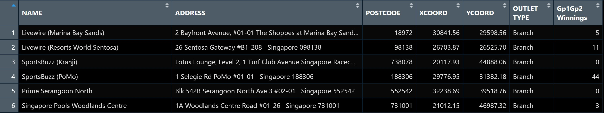

pacman::p_load(sf, tmap, tidyverse)Hands-on Exercise 8 - Part 2
22 Visualising Geospatial Point Data
22.1 Overview
Proportional symbol maps (also known as graduate symbol maps) are a class of maps that use the visual variable of size to represent differences in the magnitude of a discrete, abruptly changing phenomenon, e.g. counts of people. Like choropleth maps, you can create classed or unclassed versions of these maps. The classed ones are known as range-graded or graduated symbols, and the unclassed are called proportional symbols, where the area of the symbols are proportional to the values of the attribute being mapped. In this hands-on exercise, you will learn how to create a proportional symbol map showing the number of wins by Singapore Pools’ outlets using an R package called tmap.
22.2 Learning outcome
By the end of this hands-on exercise, you will acquire the following skills by using appropriate R packages:
To import an aspatial data file into R.
To convert it into simple point feature data frame and at the same time, to assign an appropriate projection reference to the newly create simple point feature data frame.
To plot interactive proportional symbol maps.
22.3 Getting Started
Before we get started, we need to ensure that tmap package of R and other related R packages have been installed and loaded into R.
22.4 Geospatial Data Wrangling
22.4.1 The Data
The data set use for this hands-on exercise is called SGPools_svy21. The data is in csv file format.
Figure below shows the first 15 records of SGPools_svy21.csv. It consists of seven columns. The XCOORD and YCOORD columns are the x-coordinates and y-coordinates of SingPools outlets and branches. They are in Singapore SVY21 Projected Coordinates System.

22.4.2 Data Import and Preparation
The code chunk below uses read_csv() function of readr package to import SGPools_svy21.csv into R as a tibble data frame called sgpools.
sgpools <- read_csv("data/aspatial/SGPools_svy21.csv")After importing the data file into R, it is important for us to examine if the data file has been imported correctly.
The code chunk below shows list() is used to do the job.
list(sgpools) Notice that the sgpools data in tibble data frame and not the common R data frame.
22.4.3 Creating a sf data frame from an aspatial data frame
The code chunk below converts sgpools data frame into a simple feature data frame by using st_as_sf() of sf packages
sgpools_sf <- st_as_sf(sgpools,
coords = c("XCOORD", "YCOORD"),
crs= 3414)Things to learn from the arguments above:
The coords argument requires you to provide the column name of the x-coordinates first then followed by the column name of the y-coordinates.
The crs argument required you to provide the coordinates system in epsg format. EPSG: 3414 is Singapore SVY21 Projected Coordinate System. You can search for other country’s epsg code by refering to epsg.io.
Figure below shows the data table of sgpools_sf. Notice that a new column called geometry has been added into the data frame.

You can display the basic information of the newly created sgpools_sf by using the code chunk below.
list(sgpools_sf)The output shows that sgppols_sf is in point feature class. It’s epsg ID is 3414. The bbox provides information of the extend of the geospatial data.
22.4.4 Drawing Proportional Symbol Map
To create an interactive proportional symbol map in R, the view mode of tmap will be used.
The code churn below will turn on the interactive mode of tmap.
tmap_mode("view")22.4.5 It all started with an interactive point symbol map
The code chunks below are used to create an interactive point symbol map.
tm_shape(sgpools_sf)+
tm_bubbles(col = "red",
size = 1,
border.col = "black",
border.lwd = 1)22.4.6 Lets make it proportional
To draw a proportional symbol map, we need to assign a numerical variable to the size visual attribute. The code chunks below show that the variable Gp1Gp2Winnings is assigned to size visual attribute.
tm_shape(sgpools_sf)+
tm_bubbles(col = "red",
size = "Gp1Gp2 Winnings",
border.col = "black",
border.lwd = 1)22.4.7 Lets give it a different colour
The proportional symbol map can be further improved by using the colour visual attribute. In the code chunks below, OUTLET_TYPE variable is used as the colour attribute variable.
tm_shape(sgpools_sf)+
tm_bubbles(col = "OUTLET TYPE",
size = "Gp1Gp2 Winnings",
border.col = "black",
border.lwd = 1)22.4.8 I have a twin brothers :)
An impressive and little-know feature of tmap’s view mode is that it also works with faceted plots. The argument sync in tm_facets() can be used in this case to produce multiple maps with synchronised zoom and pan settings.
tm_shape(sgpools_sf) +
tm_bubbles(col = "OUTLET TYPE",
size = "Gp1Gp2 Winnings",
border.col = "black",
border.lwd = 1) +
tm_facets(by= "OUTLET TYPE",
nrow = 1,
sync = TRUE)Before you end the session, it is wiser to switch tmap’s Viewer back to plot mode by using the code chunk below.
tmap_mode("plot")